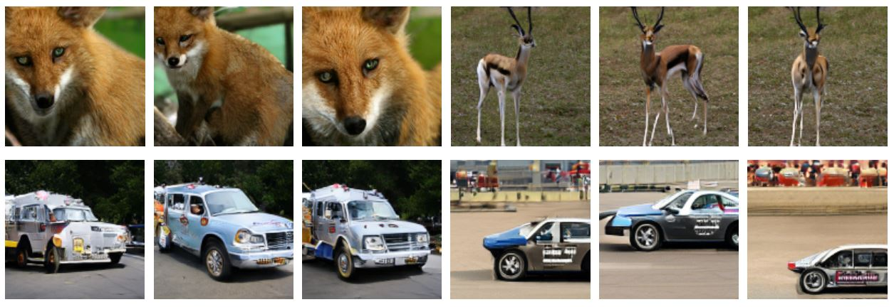
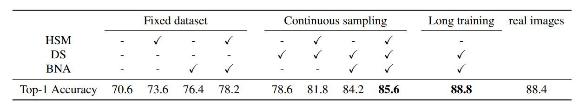

This dataset does not exist: training models from generated images
Victor Besnier Himalaya Jain Andrei Bursuc Matthieu Cord Patrick Pérez
ICASSP 2020
Abstract
Current generative networks are increasingly proficient in generating high-resolution realistic images. These generative networks, especially the conditional ones, can potentially become a great tool for providing new image datasets. This naturally brings the question: Can we train a classifier only on the generated data? This potential availability of nearly unlimited amounts of training data challenges standard practices for training machine learning models, which have been crafted across the years for limited and fixed size datasets. In this work we investigate this question and its related challenges. We identify ways to improve significantly the performance over naive training on randomly generated images with regular heuristics. We propose three standalone techniques that can be applied at different stages of the pipeline, i.e., data generation, training on generated data, and deploying on real data. We evaluate our proposed approaches on a subset of the ImageNet dataset and show encouraging results compared to classifiers trained on real images.
Results


BibTeX
@inproceedings{besnier2020dataset,
title={This dataset does not exist: training models from generated images},
author={Besnier, Victor and Jain, Himalaya and Bursuc, Andrei and Cord, Matthieu and P{\'e}rez, Patrick},
booktitle={ICASSP 2020-2020 IEEE International Conference on Acoustics, Speech and Signal Processing (ICASSP)},
pages={1--5},
year={2020},
organization={IEEE}
}